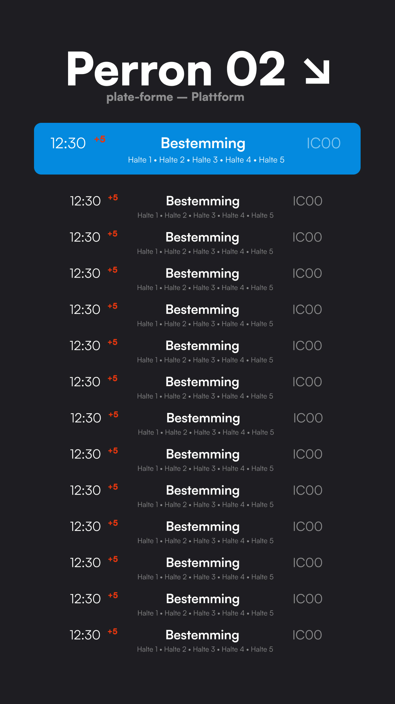
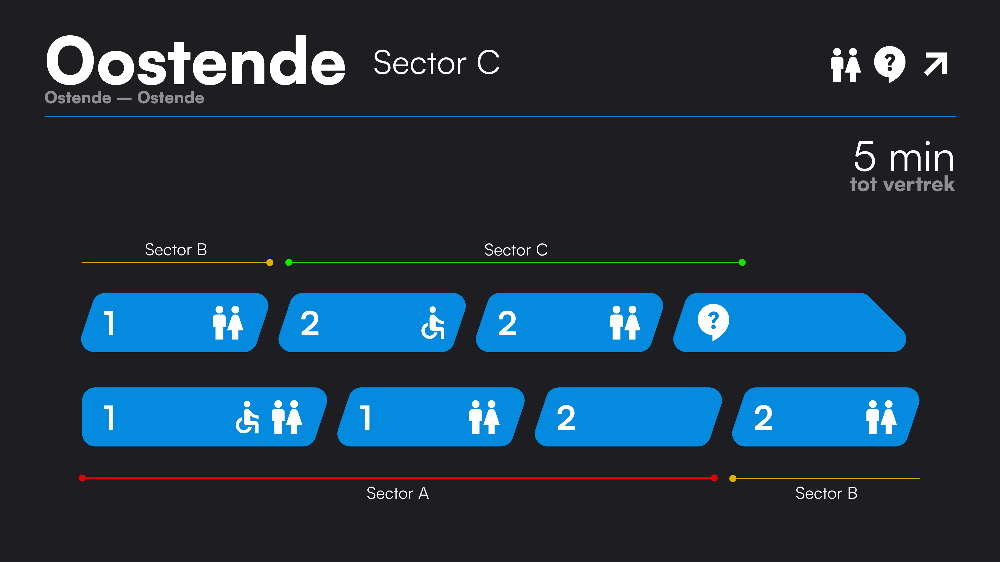

Week 4 — Midi-fi prototypes
Deze week ben ik begonnen aan een eerste versie van de opdracht in figma.

Overzichtscherm
Ik heb bij het scherm vooral geprobeert om contrast een leesbaarheid als prioriteit te houden zodat ik mijn voorbedachte ideeën respecteer.

Perronscherm
Ik heb gedacht aan consistentie en herhaling. Dit was het belangrijkste verder heb ik geen gekke innovaties gedaan.

Wagonindelingscherm
Het belangrijkste is dat de wagons en de verdeling van de trein in secties duidelijk zijn.